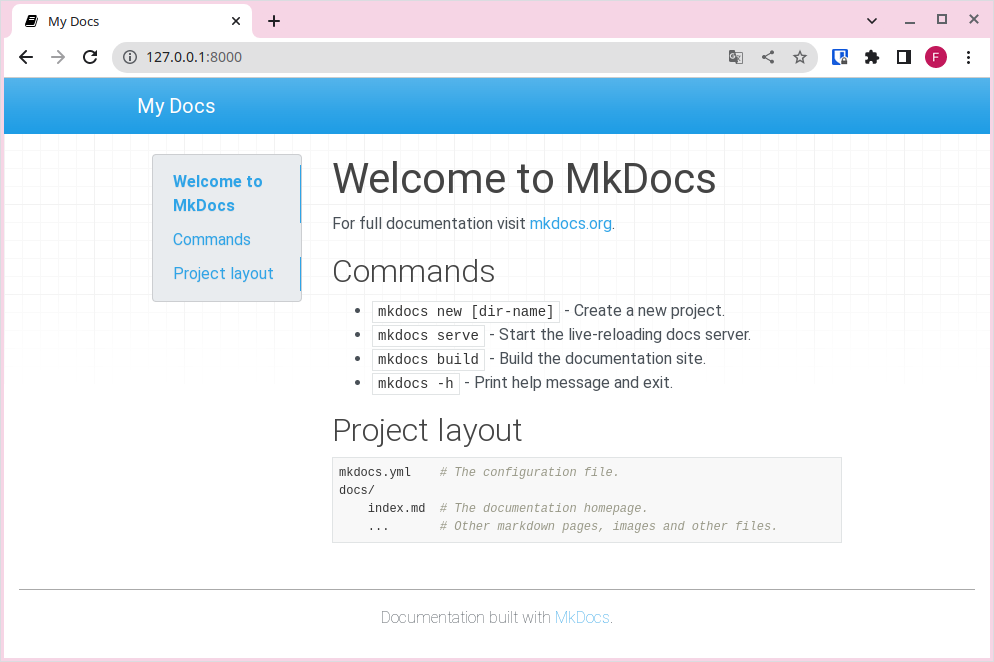

Instal·lació MkDocs
Per a seguir aquests passos, recomanem utilitzar Visual Studio Code (VSCode), ja que permet disposar d'un editor d'arxius i una terminal integrada en el mateix programa.
1. Instal·lació de MkDocs
Per a instal·lar MkDocs en el nostre ordinador, executarem el següent comando en la consola (Konsole per a LliureX, PowerShell per a Windows...):
| Bash | |
|---|---|
Pip
Si no tens instal·lat pip, hauràs d'instal·lar Python3 i, durant la instal·lació, marcar l'opció d'instal·lar pip i afegir-ho al PATH. Pots descarregar Python3 en el següent enllaç https://www.python.org/downloads/.
Una vegada que MkDocs estiga instal·lat, hauries de poder executar el següent comando en la consola:
| Bash | |
|---|---|
Si tot va bé, obtindràs una resposta similar a la següent:
| Bash | |
|---|---|
2. Creació d'un nou projecte
Ara que MkDocs està instal·lat, necessitem crear un nou projecte per a construir el nostre lloc web. Per a això, executem:
| Bash | |
|---|---|
3. Estructura del projecte
En crear un nou projecte amb MkDocs, veuràs que s'ha generat una estructura semblant a aquesta:
- L'arxiu mkdocs.yml és l'arxiu de configuració principal de tot el projecte.
- La carpeta docs contindrà els documents en format Markdown.
- L'arxiu index.md és un arxiu de mostra que es mostrarà en accedir a l'arrel del lloc web. Com pots observar, d'una banda tindràs el contingut en format Markdown i, per altre, la configuració de com es renderitzarà aquest contingut.
Carpeta docs
Encara que, per defecte, els arxius Markdown es troben en la carpeta docs, més endavant modificarem aquesta configuració.
4. Servir la web en local
Per a servir una web, normalment necessitaríem un servidor que allotge el nostre lloc i que ens permeta accedir a ell de manera local o remota a través del navegador. MkDocs ens facilita aquesta tasca creant un servidor en el nostre propi equip perquè podem previsualizar els canvis abans de publicar-los en un servidor públic (accessible des d'Internet) o de compilar el lloc per a la seva publicació.
Per a servir la web, simplement executa el següent comando dins de la carpeta del projecte (utilitza el comando cd per a entrar en ella):
| Bash | |
|---|---|
A continuació, accedeix a la URL http://127.0.0.1:8000/ i veuràs la pàgina web per defecte:

Índex per defecte
Obri en VSCode l'arxiu index.md i comprova com es correspon amb el que veus en el teu navegador. És a dir, MkDocs està convertint el contingut Markdown a un format web.
Ara pots introduir els canvis que desitges en el teu contingut; en guardar, els canvis es reflectiran automàticament en el navegador, sempre que el comando mkdocs serve seguixca en execució. La recàrrega automàtica es produeix sempre que modifiquis l'arxiu de configuració, els arxius Markdown o qualsevol arxiu del tema que estiguis utilitzant.